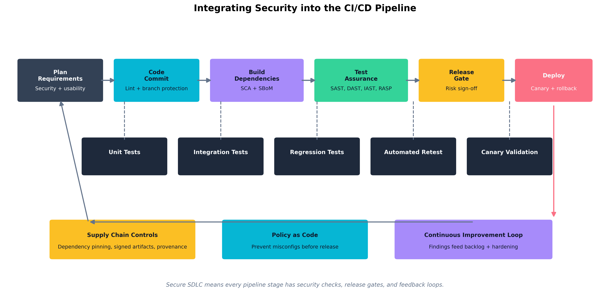
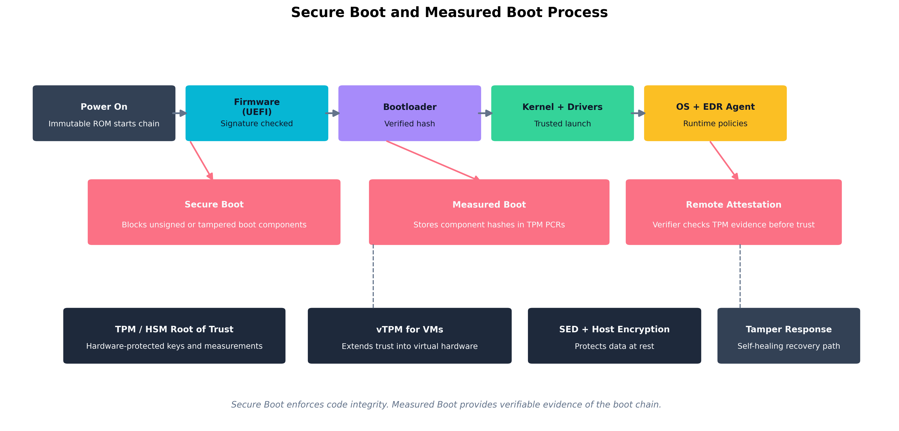

Chapter 6: Secure Systems Lifecycle and Hardware Assurance
Learning Outcomes:
- Define functional and non-functional security requirements during the early stages of the systems life cycle.
- Apply software assurance techniques, including SAST, DAST, IAST, RASP, vulnerability analysis, SCA, SBoMs, and formal methods.
- Design CI/CD pipelines with coding standards, linting, branch protection, and comprehensive testing.
- Evaluate supply chain risk management strategies for both software and hardware, including EOL planning.
- Implement hardware assurance controls, including certification and validation processes and roots of trust (TPMs, HSMs, and vTPMs).
- Assess secure boot, measured boot, virtual hardware controls, host-based encryption, and self-encrypting drives.
- Design security coprocessor and secure enclave deployments with self-healing and tamper-detection capabilities.
- Evaluate threat-actor TTPs targeting firmware, memory, buses, and electromagnetic interfaces, including shimming, USB attacks, EMI, and EMP.
Introduction
Imagine redesigning your most critical application from scratch, knowing what you now know about how attackers think. Most experienced engineers give the same answer. They would have spent more time on requirements, added security reviews before code was written, tracked every open-source package they pulled in, and never, ever hardcoded that API key.
This chapter turns that hindsight into foresight. Rather than bolting security on afterward, a competent architect weaves it into how software and hardware are designed, built, tested, and delivered. That process — from the first conversation about what a system should do through to the hardware it runs on — is the systems lifecycle, and securing it end to end is a major SecurityX theme.
We start by defining what “secure” means before a single line of code is written. We then tour the software assurance toolbox — SAST, DAST, IAST, RASP, SCA, and SBoMs — and see how CI/CD pipelines turn manual reviews into automated safety nets. From there we move down the stack to hardware: the roots of trust that make a system’s security guarantees verifiable, the secure and measured boot processes that protect startup, and the attacks — firmware tampering, shimming, USB exploits, and electromagnetic interference — that target everything below the operating system.
How Do We Bake Security into the Systems Lifecycle?
A secure product is not produced by running a scanner on Friday before a Monday release. It comes from asking security questions at every stage of development and turning those questions into automated checks. The practice of doing this systematically is called Secure SDLC or, more broadly, security in the systems lifecycle.
Defining Security Requirements: Functional vs. Non-Functional
Before developers write code, someone has to write down what the system needs to do. Those descriptions of behavior are called requirements, and they come in two flavors that matter enormously for security.
Functional requirements describe what the system does: “Users must be able to reset their passwords via email link.” “The API must return customer order history in JSON format.” “The payment form must accept Visa, Mastercard, and American Express.” These are the requirements that product managers write and developers ship. They define visible behavior.
Non-functional requirements describe how the system behaves across a quality dimension: performance, reliability, scalability — and security. Examples include: “All passwords must be hashed with a slow, salted algorithm such as Argon2id (or bcrypt with a cost factor of at least 12).” “The API must implement rate limiting of 100 requests per minute per authenticated user.” “Session tokens must expire after 30 minutes of inactivity.” “The system must log all failed authentication attempts to the central SIEM.”
The trap is treating non-functional requirements as enhancements to revisit after launch. Security requirements are promises the system makes to its users and the organization; if they are not written down before development starts, they tend not to exist in the finished product.
Key Point Non-functional security requirements should be documented with the same rigor as functional requirements — with testable acceptance criteria. “The system must be secure” is not a requirement. “All HTTP responses must include a
Strict-Transport-Securityheader withmax-ageof at least 31536000” is a requirement that a pipeline can verify automatically.
Architects must also navigate the security versus usability trade-off. Many controls add friction: MFA slows login, strict session timeouts interrupt long tasks, and aggressive input validation can break legitimate workflows. The right balance depends on the application’s sensitivity and the realistic threat model — an internal wiki and an internet-facing payment portal need different answers. Decide and document the trade-off deliberately rather than letting it be settled informally in favor of convenience.
Secure Coding Standards and Linting
Once requirements are defined, the next layer of defense is in how code is written. Coding standards are documented rules about how developers should write code in a given language and environment. They cover variable naming, error handling, input validation patterns, cryptographic algorithms, logging format, and dozens of other micro-decisions that, accumulated across a codebase, determine how likely it is to contain vulnerabilities.
Linting tools enforce standards automatically. A linter reads source code and flags violations — unused variables, missing input sanitization, hardcoded secrets, deprecated cryptographic functions — before the code ever runs. Security-specific rule sets exist: ESLint with a security plugin catches dangerous JavaScript patterns, Bandit flags common Python issues, and Semgrep lets teams write custom rules for their own anti-patterns.
The value of linting is speed. A flaw caught as the developer types it is vastly cheaper than the same flaw found in a penetration test or by an attacker. Linting shifts security feedback to the left, closer to the moment of creation.
Branch Protection and the Human Gate
Even teams with excellent individual coding habits need a mechanism to prevent mistakes from reaching production. Branch protection rules on version control platforms (GitHub, GitLab, Bitbucket) enforce policies at the repository level. Common protections include:
- Require pull requests (PRs) before merging. No one
can push directly to the
mainorproductionbranch (and, with the “include administrators” setting on, that rule binds admins too). - Require a minimum number of reviewers. Code must be reviewed by at least one other developer before merge.
- Require status checks to pass. The CI pipeline — including build, lint, and test steps — must succeed before a PR can be merged.
- Require signed commits. Commits must be cryptographically signed with a developer’s GPG or SSH key, preventing spoofed commit authorship.
Warning Branch protection rules are enforceable at the platform level, but platform administrators can usually bypass them. At a minimum, bypass events should be logged and reviewed. In highly sensitive repositories, bypasses should require approval from a separate reviewer.
The CI/CD Pipeline as a Security Checkpoint
Continuous Integration / Continuous Deployment (CI/CD) is the practice of automatically building, testing, and deploying software every time code is merged into a shared branch. From a security perspective, the pipeline is an organization’s most powerful systematic enforcement tool: every commit runs the same gauntlet of checks, and no step gets skipped because someone was busy.

Figure 6.1: A secure CI/CD pipeline embeds security checks at every stage — lint and commit signing on commit, SCA and SBoM generation at build time, SAST and DAST at test time — with findings feeding a continuous improvement backlog.The pipeline has five conceptual stages for our purposes:
- Plan — Security and usability requirements are captured before work begins.
- Code — Linting, code standards enforcement, and branch protection run on every commit.
- Build — Dependency resolution; software composition analysis (SCA) and SBoM generation happen here.
- Test — SAST, DAST, and IAST scans run, RASP agents are validated in staging, and unit, integration, and regression tests run.
- Deploy — Release gates enforce a risk sign-off; canary deployments and rollback capability reduce blast radius.
At each stage, failed checks halt the pipeline and feed findings back to developers with actionable context. The goal is not a pipeline that blocks every deploy — it is a pipeline where developers receive useful feedback fast enough that they build secure habits. That feedback loop is continuous improvement: recurring findings become new lint rules, new regression tests, or training topics, so the pipeline gets stricter where the team keeps making the same mistake.
Because a pipeline holds signing keys and deployment credentials, it is also a high-value target. Protect it like production: least-privilege build runners, secrets kept in a vault rather than in pipeline settings, and signed, attested build outputs.
Canary deployments send a new version to a small subset of users — five percent, say — and watch for anomalies before rolling it out further. Not purely a security control, a canary paired with security monitoring limits the blast radius of a flaw that slipped through testing.
Regression testing verifies that a code change does not break existing functionality, including existing security controls. A regression test suite should include tests for previously discovered vulnerabilities: if a SQL injection flaw was fixed in version 2.3, there should be an automated test that verifies SQL injection at that input is still blocked in every subsequent version.
Three more test types complete the CAS-005 list. Unit tests exercise one small function in isolation (does the input validator reject a null byte?). Integration tests check that components work together, which is where trust-boundary mistakes such as missing authorization between services appear. Automated test and retest means the pipeline reruns the relevant tests on every change and again after each fix, so a finding counts as closed only when the test that exposed it passes.
Thought Question Your pipeline runs SAST on every commit and DAST against a staging environment on every merge to
main. A developer argues that DAST is slow and should be scheduled weekly instead. What do you gain and what do you lose by accepting that trade-off? What compensating controls would you want in place if you agreed?
Quick Check 6.1
- Recall. What is the difference between a functional requirement and a non-functional security requirement?
- Discriminate. A team wants to stop anyone from merging unreviewed code straight into
main. Is the right control linting or branch protection?- Apply. At which pipeline stage would you generate the SBoM and run SCA, and why there?
Answers — Quick Check 6.1
- Functional requirements describe what the system does; non-functional security requirements describe how securely or reliably it must behave.
- Branch protection, which enforces PRs, reviews, and passing checks before merge. Linting flags insecure patterns in the code but cannot require a second human to look at it.
- The Build stage, because that is where dependencies are resolved and the full component list first exists.
What Tools Are Available for Software Assurance?
Software assurance is the discipline of verifying that code does what it is supposed to do and does not do what it is not supposed to do — with specific emphasis on security properties. The toolbox is large, and different tools measure different things at different points in the lifecycle.
SAST: Finding Problems Without Running the Code
Static Application Security Testing (SAST) analyzes source code, bytecode, or binary without executing it. The analyzer looks for known vulnerability patterns — command injection, SQL injection, use of insecure cryptographic functions, improper error handling — by examining the code’s structure and logic.
SAST is fast, integrates cleanly into CI pipelines, and needs no test environment. Its weakness is false positives: patterns that look like vulnerabilities but are not, because the tool cannot fully reason about runtime context. It might flag a string formatted into a query as SQL injection even though a parameterized query library is doing the work underneath. Developers who see too many false positives start ignoring the tool, which is arguably worse than not having it.
Common SAST tools include Checkmarx, Veracode, SonarQube, Semgrep, CodeQL (GitHub’s code-scanning engine), and language-specific tools like Bandit for Python and SpotBugs for Java.
Example
What a SAST finding looks like in practice
Running Bandit against a Python microservice returns:
>> Issue: [B105:hardcoded_password_string] Possible hardcoded password: 'admin1234' Severity: Low Confidence: Medium CWE: CWE-259 (https://cwe.mitre.org/data/definitions/259.html) Location: app/config.py:14:14The offending line is
DB_PASSWORD = "admin1234". Notice the tool rated it only “Low” severity: SAST ranks the pattern, not the damage, which is why a human still triages the results. The fix is to read the value from the environment at runtime, failing loudly if it is missing:DB_PASSWORD = os.environ["DB_PASSWORD"]A secrets manager injects the real value at deploy time, so it never touches source code. SAST caught this before the commit was merged; a credential baked into an image on a public registry can be found by automated scanners within minutes.
DAST: Finding Problems By Running the Code
Dynamic Application Security Testing (DAST) tests a running application by simulating attacks against it — submitting malicious inputs, probing for injection vulnerabilities, checking for misconfigurations in HTTP headers, testing authentication and authorization logic. DAST tools do not have access to source code; they see the application the way an attacker would.
DAST finds what SAST cannot: flaws that emerge only when components interact at runtime, such as web server misconfigurations, authentication bypasses visible only in the assembled system, and session management flaws in the protocol flow. The trade-off is that DAST needs a live environment, is slower than SAST, and misses code paths its attacks never exercise.
A widely used open-source DAST tool is ZAP (Zed Attack Proxy), which began as an OWASP project. Commercial alternatives include PortSwigger’s Burp Suite, Rapid7 InsightAppSec, and Invicti (formerly Netsparker).
IAST: Instrumentation from the Inside
Interactive Application Security Testing (IAST) embeds an agent in the running application during testing. The agent observes internal behavior as functional tests, integration tests, or manual QA exercise the app, and flags vulnerabilities with full context: the specific function, the tainted data flow, and the code line.
IAST avoids much of SAST’s false-positive problem (it has runtime context) and DAST’s blind spot inside the code (it sees code paths that outside probes may not reach). The trade-off is that IAST needs a compatible runtime, adds performance overhead and licensing cost, and only sees code that your tests actually exercise.
RASP: Security that Runs in Production
Runtime Application Self-Protection (RASP) embeds a security agent in the application in production, not just in testing. The agent inspects function calls, data flows, and requests, and can block attacks as they happen: if user input is about to reach a SQL query in a way that looks like injection, RASP can end the request, log the event, and alert the security team.
RASP operates close to the vulnerable code and catches exploits that slip past perimeter defenses. However, it adds latency, adds a new component to maintain and trust, and can produce false positives that break legitimate behavior. Treat it as a defense-in-depth layer added after SAST and DAST have reduced the vulnerability count, not a substitute for fixing the code.
| Tool Type | When It Runs | Sees Source Code? | Main Strength | Main Weakness |
|---|---|---|---|---|
| SAST | Pre-commit / CI | Yes | Fast, catches patterns early | False positives, no runtime context |
| DAST | Against live app | No | Finds runtime/integration flaws | Slower, needs live environment |
| IAST | During testing | Agent observes | Low false positives, full context | Runtime overhead, coverage depends on tests |
| RASP | Production runtime | No (runtime) | Blocks live attacks | Latency, maintenance, false-positive risk |
Vulnerability Analysis and Formal Methods
Vulnerability analysis is the broader discipline of identifying, classifying, and prioritizing known vulnerabilities in software components — whether discovered by the tools above, reported by vendors, or found in public databases like the National Vulnerability Database (NVD) and CVE list. Effective vulnerability analysis pairs automated scanning with human judgment: not every critical-severity CVE is exploitable in your specific deployment context, so analysts combine severity scores (CVSS), exploit-likelihood data (EPSS), and CISA’s Known Exploited Vulnerabilities catalog to decide what to fix first (Chapter 12 covers this triage in depth).
Formal methods are mathematical techniques for specifying and verifying software behavior. A formal specification states precisely what a system must do; formal verification then proves, with mathematical reasoning, that the implementation satisfies it. Formal methods are impractical for most enterprise applications but have verified security-critical software such as cryptographic libraries, kernels, hypervisors, and avionics. The TLS 1.3 protocol was formally analyzed during its design, and the seL4 microkernel has a machine-checked proof of functional correctness. For the exam, know what formal methods offer and why they are used mainly in high-assurance contexts.
Software Composition Analysis and Software Bills of Materials
Modern applications are mostly open-source dependencies. A typical enterprise web application may contain hundreds of third-party packages, each depending on dozens more, written by developers you will never meet and audited by nobody. When a vulnerability surfaces in one of them, the consequences can be severe.
Software Composition Analysis (SCA) tools inventory the open-source and third-party components in an application’s dependency tree, check them against known vulnerability databases, identify license compliance issues, and flag dependencies that have reached end-of-life. SCA runs at build time and gives a continuous view of dependency risk. Common SCA tools include Snyk, FOSSA, Black Duck, and the GitHub Dependabot feature.
A Software Bill of Materials (SBoM) is a formal, machine-readable inventory of every component in a software product — every package, version, license, and origin. SBoMs are to software what ingredient labels are to food: a transparent record of what went into the product, enabling consumers to assess their exposure when a new vulnerability is disclosed. Two open formats dominate, SPDX and CycloneDX, and CISA’s 2026 Minimum Elements for a Software Bill of Materials (July 2026, replacing the 2021 NTIA baseline) lists the data fields a useful SBoM must carry (Cybersecurity and Infrastructure Security Agency 2026). Executive Order 14028 (2021) brought SBoMs into U.S. federal software purchasing, though a January 2026 OMB memorandum later left SBoM requests to each agency’s discretion (Mayer Brown LLP 2026). Other regulators, such as the FDA for medical devices (see this chapter’s practice question), now require them by law (U.S. Congress 2022).
Key Point An SBoM is not just a compliance artifact — it is an operational security tool. When Log4Shell was disclosed in December 2021, organizations with current SBoMs or SCA inventories could often identify affected systems in hours. Organizations without them spent weeks manually auditing codebases, or did not find all their exposures at all.
Case Study Log4Shell and the Importance of SBoMs
On December 9, 2021, a researcher published details of a critical zero-day vulnerability in Log4j, a widely used Java logging library maintained by the Apache Software Foundation. The vulnerability — CVE-2021-44228, quickly nicknamed Log4Shell — allowed an attacker to achieve remote code execution on servers running vulnerable versions of Log4j, simply by causing the server to log a crafted string. Log4j was embedded across an enormous share of enterprise Java applications, commercial products, cloud services, and industrial control systems (Cybersecurity and Infrastructure Security Agency 2022).
It received a CVSS score of 10.0, the maximum, and security teams worldwide faced one urgent question: do we have Log4j in our systems? (Cybersecurity and Infrastructure Security Agency 2022)
Few organizations had formal SBoMs in 2021, but those with SBoM or SCA inventories got their answer quickly. A query returned the systems running affected versions; teams prioritized by internet exposure and criticality, patched or mitigated in order of risk, and confirmed coverage within days.
Everyone else faced weeks of manual searching through package files, container images, JAR files embedded inside JAR files, and vendor support portals. Many did not finish before attackers began mass exploitation, and some learned months later, through incident response, that they had missed a vulnerable instance that had already been compromised.
The incident made the case for SBoMs in a way that years of advocacy had not: supply chain visibility is the difference between answering “are we exposed?” in hours and answering it in weeks.
How Do We Manage the Supply Chain and Plan for End-of-Life?
A modern organization builds little from scratch. It buys commercial products, uses open-source libraries, runs cloud services, and sources hardware from a global supply chain, so its security depends on the practices of every vendor and manufacturer it relies on, not just its own engineers.
Software Supply Chain Risk Management
Software supply chain risk management covers the risks from software that originates outside the organization: open-source packages, commercial off-the-shelf (COTS) software, SDKs and APIs, and contractor code. The SolarWinds attack (discussed in Chapter 5) was a supply chain attack: attackers compromised SolarWinds’ build environment and inserted malicious code into an Orion update that thousands of customers installed, trusting a vendor they had vetted. The update carried a valid signature, which is why signing alone is not enough and build provenance matters (Mandiant 2020).
Key practices for software supply chain security include:
- Dependency pinning: Rather than always pulling the latest version of a package, pin a known-good version (with a lockfile that records hashes) and update deliberately.
- Signed artifacts: Require that software packages and container images be cryptographically signed by their publishers. Do not install unsigned packages in production.
- Provenance tracking: Record where code came from, who built it, and on which infrastructure — ideally using a framework like SLSA (Supply-chain Levels for Software Artifacts), whose Build track grades how trustworthy a build’s provenance is, and whose v1.2 added a Source track for how code is managed before the build (SLSA Project (OpenSSF) 2025).
- Vendor security assessments: Evaluate the security practices of commercial software vendors as part of procurement. Does the vendor maintain a vulnerability disclosure program? Do they provide SBoMs? How quickly do they patch critical vulnerabilities?
These practices overlap heavily with NIST’s Secure Software Development Framework (SSDF), which treats provenance, dependency control, artifact integrity, and supplier review as core software security activities rather than optional extras (Souppaya et al. 2022). Version 1.1 (SP 800-218) remains the final release; NIST published a draft Rev. 1 (SSDF 1.2) for public comment in December 2025 (National Institute of Standards and Technology 2025).
Hardware Supply Chain Risk Management
Hardware is a supply chain risk too. Motherboards, network cards, storage controllers, and processors are designed by one company, manufactured by another, assembled by a third, and distributed by a fourth. Each hand-off is a chance to introduce counterfeit components, modified firmware, or hardware implants.
Hardware supply chain assurance includes:
- Purchasing from authorized channels and verifying hardware against vendor hashes or physical security seals.
- Firmware verification at deployment: comparing firmware versions against vendor-supplied golden hashes, and implementing secure boot to prevent unauthorized firmware payloads.
- Tamper-evident packaging and physical inspection logs.
- Trusted-supplier programs and counterfeit-avoidance standards, such as the U.S. Department of Defense’s Trusted Foundry accreditation for microelectronics sourcing.
The threat is not hypothetical: counterfeit network equipment has turned up in government and enterprise environments, and NIST’s platform firmware resiliency guidance treats unauthorized firmware modification as a realistic attack class to detect and recover from (Regenscheid 2018).
End-of-Life (EOL) Planning
Every piece of technology has an end-of-life (EOL) date — the point at which its vendor stops providing security updates. After EOL, newly discovered vulnerabilities go unpatched, so running EOL technology means accepting accumulating risk.
EOL planning starts at procurement, not at the EOL date. Architects should document when the product reaches EOL, what the upgrade or replacement path is, and what compensating controls apply if EOL arrives before replacement.
EOL challenges are most acute for embedded systems, industrial control systems, and hardware with long deployment lifecycles — a controller whose vendor stops issuing firmware patches after five years, installed in a plant expected to run for twenty. Mainstream software ages out too: Windows 10 reached end of support in October 2025, so any Windows 10 machine without paid extended updates now goes unpatched. When EOL cannot be avoided, compensating controls typically include network segmentation (isolating EOL systems from general-purpose networks), enhanced monitoring (watching for exploitation indicators), and restricted connectivity (minimizing inbound paths).
Warning Running a web-facing application on an EOL operating system because “the upgrade was too complicated” is a risk acceptance decision with real probability and potentially catastrophic impact. Make it explicitly: quantify the risk, document it with senior executive sign-off, and revisit it regularly rather than letting it quietly persist.
Quick Check 6.2
- Recall. What do SCA tools provide, and what does an SBoM provide?
- Discriminate. A scanner flags an outdated library with a known CVE in your dependency tree. Is that SCA or SAST?
- Apply. A web-facing system has reached EOL but cannot be replaced immediately. What compensating controls does the chapter recommend?
Answers — Quick Check 6.2
- SCA inventories third-party dependencies and known vulnerabilities; an SBoM records the full machine-readable ingredient list of the software.
- SCA. It matches third-party components against vulnerability databases; SAST looks for flaws in code your team wrote.
- Segment it, watch it closely, and shrink connectivity. The chapter recommends network isolation, enhanced monitoring, and restricted inbound paths.
How Do We Establish Hardware Roots of Trust?
Now we move down the stack to the hardware and firmware that software runs on. If an attacker compromises them before the operating system loads, every application-level control sits on a compromised foundation. Hardware roots of trust give a system a trustworthy, verifiable starting point — one that cannot be tampered with without detection.
Certification and Validation Processes
Some hardware assurance happens before a device ever ships, through certification and validation programs that check a product against defined security requirements. For the U.S. federal market, FIPS 140-3 defines requirements for cryptographic modules; modules that pass laboratory testing are listed as validated and may be used where certified cryptography is required (National Institute of Standards and Technology 2019). The Common Criteria framework (ISO/IEC 15408) is a broader evaluation scheme: buyers compare products against standardized Protection Profiles or a vendor’s own Security Target, with independently audited results.
For the exam, know what problem these programs solve (verifiable third-party assurance) and their limitation: certification is a point-in-time snapshot, and post-sale firmware updates may change the posture that was evaluated.
TPMs, HSMs, and vTPMs
Three components appear repeatedly in discussions of roots of trust. A Trusted Platform Module (TPM) is a dedicated security chip specified by the Trusted Computing Group (TCG), found on most modern enterprise laptops, desktops, and servers. TPM 2.0 is the current generation, and Windows 11 requires it. A TPM may be a discrete chip, part of the CPU package, or implemented in protected firmware. It provides:
- Hardware-protected key storage: Private keys generated inside the TPM cannot be extracted by software, even by the operating system or a kernel-level rootkit (though malware on a running host may still be able to ask the TPM to use a key).
- Platform Configuration Registers (PCRs): Registers that accumulate cryptographic measurements of system components during boot. Each measurement is a hash of a firmware or software component, extended into a chain.
- Attestation: The TPM can produce a signed report (a “quote”) of its PCR values, letting a remote verifier confirm the platform booted through the expected components.
- Sealing: Keys can be “sealed” to specific PCR values, so the data decrypts only if the system is in a specific, measured state. BitLocker uses this to unlock the disk only when the boot chain is intact.
A Hardware Security Module (HSM) is a more capable, physically hardened device for high-throughput cryptographic operations in enterprise or cloud environments. It stores master keys, performs signing and encryption internally, and resists tampering — opening the device triggers key zeroization. HSMs protect PKI root CAs, payment keys, code-signing keys, and cloud key management backends.
Key Point The critical architectural distinction between a TPM and an HSM is scale and purpose. TPMs are embedded per-device for integrity measurement and local key protection. HSMs are shared infrastructure devices for high-value, high-throughput cryptographic operations and the protection of master secrets.
A Virtual Trusted Platform Module (vTPM) extends the TPM concept into virtualized environments. When a virtual machine needs measured boot, disk-encryption key protection, or attestation, the hypervisor provides a vTPM that acts as the guest’s TPM. Its secrets are ultimately protected by the hypervisor and, ideally, the host’s physical TPM, so VMs get TPM-dependent protections without physical hardware changes.
| Component | Physical? | Primary Use | Trust Anchor |
|---|---|---|---|
| TPM | Yes (chip, or firmware/CPU-based) | Per-device integrity measurement, key storage | Manufacturer-provisioned endorsement key |
| HSM | Yes (dedicated appliance or PCIe card) | Enterprise crypto operations, master key protection | Tamper-resistant, tamper-responsive hardware |
| vTPM | No (hypervisor software) | TPM functionality for VMs | Hypervisor + physical TPM on host |
Example
BitLocker sealed to TPM PCR values
On a laptop with Secure Boot enabled, BitLocker by default seals its Volume Master Key to PCR 7 (the Secure Boot state: which keys and policy are in force) and PCR 11 (a BitLocker-specific measurement of the Windows boot manager). A stricter policy can add PCR 0 (core UEFI firmware) and PCR 4 (boot manager code). At each startup the boot components measure what they load and extend the hashes into the PCRs.
If everything is unchanged — the same Secure Boot keys and policy, the same boot manager — the PCRs match the sealed policy. The TPM releases the key and the drive unlocks transparently. The user sees nothing unusual.
If an attacker removes the drive and puts it in a different machine, or tampers with the boot configuration between reboots, the measured PCR values will not match what the key was sealed to. The TPM refuses to release the key. The drive contents remain encrypted and unreadable, even with the physical disk in hand. Because a TPM-only unlock still releases the key to anyone who can boot the intact machine, high-security deployments add a pre-boot PIN.
That is “sealing to platform state”: the key is tied to cryptographic evidence that the system is in an expected configuration, not just to a password.
Virtual Hardware and Host-Based Encryption
Virtual hardware security means enforcing security properties at the hypervisor layer, where individual VMs cannot override them. Hypervisors such as VMware ESXi and Microsoft Hyper-V give VMs virtual NICs, disks, and CPUs, and the hypervisor controls what those virtual devices can do. Relevant controls include:
- VM isolation: Memory pages allocated to one VM are not accessible to other VMs, enforced by the hypervisor’s memory management, not by the guest OS.
- Secure VM networking: Virtual switches can enforce MAC address pinning, VLAN tagging, and promiscuous mode restrictions between VMs.
- Encrypted VM storage: Hypervisors can encrypt virtual disk volumes using keys held by an external key manager (often HSM-backed), so access to the storage backing file does not expose the VM’s data.
Host-based encryption is encryption enforced by the host OS or hypervisor for all data written to storage; Microsoft BitLocker and Linux dm-crypt are common implementations. Because data is encrypted before it reaches the disk, it works regardless of the storage medium.
Self-Encrypting Drives (SEDs) implement encryption in the drive’s own firmware and controller, with no CPU overhead. Most SEDs follow the TCG Opal standard and are unlocked at boot through a pre-boot authentication step. Their signature benefit is cryptographic erasure: instead of overwriting every sector to retire a drive, an administrator deletes the internal encryption key, making all stored data unreadable almost instantly.
Warning SEDs rely entirely on the drive’s own firmware. Published research has documented SSDs that reported encryption as active, yet whose data was recoverable without the password because of buggy firmware or weak key handling. Organizations protecting regulated data with SEDs should seek independent verification of the drive’s claims or layer host-based encryption on top.
Security Coprocessors and Secure Enclaves
Systems can add isolated hardware beyond the TPM in two ways. A security coprocessor is a separate, dedicated processor with its own protected memory and firmware that handles keys and sensitive operations so the main CPU never sees them; Apple’s Secure Enclave processor, Google’s Titan chip, and Microsoft’s Pluton are well-known examples. CPU security extensions instead build the protection into the main processor. Intel Software Guard Extensions (Intel SGX) lets an application run code in a secure enclave — an isolated region of memory that the CPU itself protects. Even the operating system, hypervisor, and other applications cannot read or tamper with memory inside an enclave. Its contents are encrypted in RAM and decrypted only inside the CPU as they are used. Confidential-computing features such as AMD SEV-SNP and Intel TDX apply the same idea to an entire virtual machine, shielding it from the hypervisor and the cloud operator.
Enclaves suit workloads that need confidentiality even from the platform operator, such as processing cryptographic keys in a cloud whose administrators you do not fully trust.
Example Victor Frankenstein and the IoT Key Injection Problem at Geneva Labs
Victor Frankenstein was three weeks into his new role as Bio-Tech Security Engineer at Geneva Labs when a firmware audit landed on his desk. Geneva made implantable biosensors for clinical trials, small devices that radioed patient vital signs to hospital monitors. Each needed a unique cryptographic identity so its data could be trusted and it could accept authenticated firmware updates. The inherited process generated those identity keys with a script on a shared manufacturing laptop and stored them in cleartext in a microcontroller’s flash memory.
To a non-engineer that might sound like minor technical debt. To Victor it was a catastrophic exposure: anyone who could read the flash — a vendor technician, a compromised laptop on the factory network, a patient who disassembled a returned device — could extract the key, impersonate the device, or forge trusted firmware updates.
Victor’s fix had three components. First, each device now generates its own keypair on a secure element embedded in the biosensor SoC, and the private key never leaves the chip. A provisioning station asks the secure element for a certificate request, and a certificate authority whose signing key lives in the corporate HSM issues a device certificate; only the public key and the certificate ever travel. Second, firmware updates must be signed by a key stored exclusively in the HSM; unsigned updates are rejected by the bootloader. Third, the manufacturing laptop was retired and replaced by a dedicated provisioning appliance with physical tamper detection.
Victor’s post-implementation lesson was simple: a secret generated outside the device and then injected has already been exposed. Generate secrets where they will live, inside the hardware that protects them.
Quick Check 6.3
- Recall. What is the main architectural difference between a TPM and an HSM?
- Discriminate. A virtual machine needs TPM-style attestation and disk-key protection. Which control from the chapter fits that use case?
- Apply. What principle did Victor Frankenstein’s redesign enforce when he changed how device keys were created?
Answers — Quick Check 6.3
- A TPM is a per-device root of trust for measured boot and local key protection; an HSM is shared tamper-resistant infrastructure for high-value enterprise cryptography.
- A vTPM. It gives the guest TPM-like functions through the hypervisor.
- Generate secrets where they will live. Victor moved key generation into protected hardware instead of creating keys outside the device and injecting them later.
How Do We Secure the Boot Process and Defend Against Hardware Attacks?
Startup is the earliest and most trusted moment in a system’s life. Malware that installs itself in firmware or the bootloader runs before the operating system, endpoint protection, and logging. This section covers how modern hardware defends the boot sequence and how attackers try to subvert it.
Secure Boot
Secure Boot is a UEFI firmware feature that ensures that the system will only execute boot software signed with a key in an approved database. When Secure Boot is enabled:
- The UEFI firmware holds a database of authorized signing certificates (the “db”) and revoked certificates and hashes (the “dbx”).
- Before handing off to the bootloader, the firmware verifies the bootloader’s signature against the db.
- The bootloader then verifies the kernel’s signature before executing it.
- The kernel verifies its drivers and modules.
At each stage, a verification failure halts the boot with a warning instead of loading the component. An attacker who replaces the bootloader with a malicious one — a bootkit — sees it rejected by the firmware, and unsigned drivers are blocked if the OS is configured to require signatures.
Secure Boot is most effective when:
- The firmware’s Platform Key (PK) and Key Exchange Keys (KEKs) are enrolled from the hardware vendor and not replaceable without physical access.
- The
dbxis kept up to date with revoked components, particularly bootloaders found to be vulnerable. The BlackLotus bootkit (2022–2023) was the first publicly known in-the-wild UEFI bootkit to bypass Secure Boot on fully patched Windows 11 systems, by abusing older signed boot components that were not yet revoked (Smolár 2023).
Warning Secure Boot keys age. The Microsoft certificates on most PCs since 2011 (KEK CA 2011 and UEFI CA 2011, expiring June 2026; Windows Production PCA 2011, expiring October 2026) are being replaced by 2023 versions (Microsoft 2025). Firmware does not check certificate dates, so devices with only the old certificates should still boot, but they cannot receive new
db/dbxupdates or boot-manager fixes signed with the new keys. As of October 2026 all three dates have passed, so tracking which devices hold the 2023 certificates is a routine lifecycle task.

Figure 6.2: The full boot integrity chain — Secure Boot validates signatures at each stage; Measured Boot records hashes into the TPM; Remote Attestation allows a verifier to confirm the boot chain without physical access.Measured Boot
Measured Boot complements Secure Boot but serves a different purpose. Where Secure Boot blocks unauthorized components, Measured Boot records everything that ran during startup. At each stage of the boot:
- Starting from immutable boot code (the core root of trust for measurement), each stage computes a cryptographic hash of the next component before executing it.
- That hash is extended into a TPM Platform Configuration Register (PCR) — meaning the new PCR value is the hash of (old PCR value + new measurement). This creates an irreversible, cumulative record.
- By the time the OS is running, the PCR values represent a tamper-evident log of everything that ran from power-on.
A remote verifier can ask the TPM for a signed quote of its PCR values and compare them with known-good measurements; if a component was replaced, the chain will not match. This process — remote attestation — underpins cloud services that verify VM trustworthiness before granting access to sensitive data.
Measured Boot does not prevent an attack by itself; it provides evidence for detection and response. Paired with attestation-gated access (“this workload may not use the signing key if its PCR values show the kernel was modified”), it becomes preventive.
Firmware Attacks: BIOS/UEFI Tampering
BIOS (Basic Input/Output System) in older systems and UEFI (Unified Extensible Firmware Interface) in modern ones initialize hardware before any operating system loads. Firmware-level malware is extremely difficult to detect and persists through OS reinstalls and even drive replacements. In 2018 researchers found LoJax, the first UEFI rootkit seen in the wild, attributed to the Russian-linked Sednit (APT28) group (ESET Research 2018).
Defense strategies include:
- Secure Boot enforcement to block unsigned boot loaders and UEFI drivers.
- Firmware signing and secure update processes enforced by the vendor — UEFI updates should only be applied from signed capsule files delivered through verified channels.
- Physical access controls — firmware updates are often protected by physical-presence requirements or administrative passwords, which work only if physical access is controlled.
- Hardware-verified firmware startup such as Intel Boot Guard, which checks that the initial boot block is signed by the manufacturer’s key, whose hash is fused into the chipset at manufacture, so modified firmware fails verification before it runs.
Shimming, USB-Based Attacks, and Evil Maid
Shimming means interposing a thin layer between components to intercept or manipulate their communications. Hardware shims — a device placed between a keyboard and a laptop, or inline on a SATA cable — can log keystrokes, intercept disk writes, or inject commands. Not every shim is hostile: the vendor-signed UEFI shim many Linux distributions use is a legitimate part of the boot chain, whereas malicious shims are unauthorized software or hardware inserted to bypass trust.
USB-based attacks exploit the broad functionality and default trust that operating systems extend to USB devices. Relevant attack forms include:
- Rubber Ducky / HID attacks: A USB device that presents itself as a keyboard and types a malicious payload faster than a human can see, installing malware or adding a backdoor.
- BadUSB: Malicious firmware in a USB device’s microcontroller that lets it impersonate any USB class — keyboard, network adapter, storage — whichever gives the attacker the best access.
- Malicious charging cables and stations (“juice jacking”): Chargers or cables that use the USB data lines to attack a connected phone or laptop. Researchers have demonstrated it repeatedly, but confirmed criminal use is rare, and modern operating systems prompt before trusting a data connection; cheap data blockers close the gap anyway.
Controls for USB attacks include:
- Disabling unused USB ports in firmware or OS policy.
- Implementing USB device allow listing through endpoint management tools (only pre-approved device identifiers may be recognized by the OS).
- Using USB data blockers or charge-only cables for charging from untrusted sources.
- Physical port locks for high-security workstations.
The evil maid attack is worth knowing by name: an attacker with brief physical access to an unattended, powered-off device — in a hotel room, say — boots from a USB device they control, installs a bootkit, reads the disk, or implants hardware, and leaves before the owner returns. Secure Boot and Measured Boot (ideally with a TPM-plus-PIN disk unlock) address the software side; chassis intrusion switches and tamper-evident seals address the hardware side.
Memory Exploitation Techniques
Attackers who cannot modify firmware or the boot chain may target memory directly once the system is running. Relevant techniques include:
DMA attacks: Direct Memory Access (DMA) allows certain peripheral devices (Thunderbolt, FireWire, some PCIe devices) to read and write system memory without CPU involvement. An attacker with physical access and a DMA-capable device can read encryption keys and credentials directly from RAM. IOMMU (Input/Output Memory Management Unit) controls counter this by restricting which physical memory regions each DMA-capable device may access.
Cold boot attacks: DRAM retains data for seconds to minutes after power is removed, especially when cooled. An attacker can physically remove RAM from a running or recently powered-off machine, cool the chips (extending retention time), and dump their contents to find encryption keys or credentials. TPM sealing does not prevent this, because the disk key must sit in RAM once the drive is unlocked. Real mitigations include hardware memory encryption (such as AMD SME or Intel TME), firmware that wipes memory at restart, soldered-on RAM, and shutting a laptop down fully instead of suspending it.
Rowhammer: A DRAM weakness where repeatedly accessing certain memory rows flips bits in adjacent rows, letting an attacker corrupt memory they have no permission to touch. It has been used to escalate from user to kernel privilege.
Electromagnetic Attacks: EMI and EMP
Some physical attacks work at a distance. Electromagnetic Interference (EMI) is electromagnetic energy, accidental or deliberate, that disrupts electronic devices. Deliberate EMI (sometimes called IEMI, Intentional Electromagnetic Interference) can flip bits in memory, reset microcontrollers, or corrupt data on buses. An Electromagnetic Pulse (EMP) is a burst intense enough to damage or destroy circuits: a high-altitude nuclear detonation produces one across a wide region, and small non-nuclear “EMP guns” can destroy consumer electronics at close range. Large-scale EMP is mainly a continuity-of-operations concern rather than a data-theft technique, but it drives the hardening of critical infrastructure. Faraday cages, shielded rooms, and EMP-hardened hardware are the standard mitigations for both.
TEMPEST is a U.S. government and NATO program, with accompanying emissions-security standards, that addresses the opposite problem: information leakage through unintentional emissions. Screens, keyboards, processors, and cables all radiate signals that can, with the right equipment, be intercepted and decoded at a distance. TEMPEST-certified equipment is shielded to push those emissions below detectable levels.
Key Point For the exam, know what EMI, EMP, and TEMPEST are and which controls address them. You will not design a Faraday cage, but you should recognize electromagnetic phenomena as a real hardware attack surface, especially for facilities housing classified or highly sensitive systems.
Tamper Detection, Self-Healing Hardware, and Countermeasures
The final layer of hardware assurance is what happens when an attack occurs. Tamper detection means physical and logical mechanisms that alert the system when unauthorized access is underway. Examples include:
- Chassis intrusion detection switches: A sensor on the computer case that logs a flag in the BIOS event log (and optionally sends an alert) when the case is opened.
- Tamper-evident seals and labels: Physical labels or epoxy on screws and connectors that are visibly damaged if removed.
- Cryptographic attestation chains: The TPM’s measured boot provides a logical tamper signal: if the PCR values are wrong at boot, something in the boot path changed.
- HSM zeroization: A hardware security module physically monitors for tamper attempts — temperature extremes, voltage anomalies, physical penetration — and destroys its stored keys automatically.
Self-healing hardware is a design pattern where the hardware itself can detect corruption and recover. NIST SP 800-193 frames platform firmware resiliency as three capabilities — protecting firmware from unauthorized change, detecting corruption, and recovering to a known-good image — each anchored in a hardware root of trust (Regenscheid 2018). Some PC vendors embed a controller that verifies the BIOS at power-on and restores a protected backup copy if it is corrupted (HP Sure Start is one example). Server BMCs (Baseboard Management Controllers) can reflash BIOS from a golden copy, and some enterprise routers keep a verified backup firmware image independent of the primary, allowing automatic rollback on failure. Detection alone (as in Boot Guard or Secure Boot) is not self-healing; the recovery step is what earns the name.
Thought Question A laptop recovered from an attacker is delivered to your forensics team. The BIOS event log shows a chassis intrusion event at 2:47 AM, followed by a Secure Boot failure for the bootloader at 2:48 AM. What do these two log entries together suggest about what the attacker attempted? What would you expect the system’s state to be if the Secure Boot enforcement was properly configured?
Quick Check 6.4
- Recall. What does Secure Boot do, and what does Measured Boot do?
- Discriminate. A Thunderbolt peripheral reading RAM directly is what kind of attack: DMA or cold boot?
- Apply. A cloud workload must be refused its signing key whenever the host’s kernel has been modified. Which two boot-integrity mechanisms make that decision possible?
Answers — Quick Check 6.4
- Secure Boot blocks untrusted boot components; Measured Boot records what ran into TPM PCRs for later attestation.
- DMA. The attacker is using a peripheral to access live memory directly; cold boot is the cooled-RAM retention attack.
- Measured Boot plus remote attestation. The TPM records the kernel’s hash in a PCR, and a verifier checks the signed quote before releasing the key. Secure Boot alone only blocks; it produces no evidence for a remote party.
Chapter Review and Conclusion
This chapter followed the security-minded architect from the first conversation about requirements down to hardware that must withstand physical and electromagnetic attack. The throughline: embed security at every stage, automate what you can, and make sure the hardware underneath is a trustworthy foundation.
Requirements and software assurance. Non-functional security requirements need testable acceptance criteria and an explicit usability trade-off. SAST reads code, DAST attacks a live application, IAST observes it from inside during testing, and RASP defends it in production. SCA and SBoMs inventory dependencies, which let some organizations answer “are we running Log4j?” in hours. Unit, integration, regression, automated retest, and canary testing run inside CI/CD pipelines that also enforce linting and branch protection.
Supply chain and EOL. Most of what we run was built by someone else. Pinning, signing, provenance, vendor assessment, and careful hardware procurement reduce that risk, and EOL planning makes unsupported technology a managed decision.
Hardware assurance. FIPS 140-3 and Common Criteria give point-in-time third-party assurance. TPMs measure and seal, HSMs guard organizational secrets, vTPMs serve virtual machines, and coprocessors and enclaves isolate sensitive computation. Secure Boot blocks unauthorized boot components; Measured Boot records what ran for remote attestation.
Attacks and countermeasures. Below the OS, attackers use firmware implants, shims, HID and BadUSB devices, DMA and cold boot attacks, Rowhammer, and EMI or EMP. Tamper detection, HSM zeroization, and self-healing firmware recovery let a system notice an attack and return to a trusted state.
Key Terms Review
- Functional Requirements: Descriptions of what a system does — its features and behaviors.
- Non-Functional Requirements: Descriptions of quality attributes: security, performance, reliability.
- SAST (Static Application Security Testing): Analysis of source code for vulnerability patterns without execution.
- DAST (Dynamic Application Security Testing): Testing a running application by simulating attacks.
- IAST (Interactive Application Security Testing): Agent-based testing that observes applications during execution.
- RASP (Runtime Application Self-Protection): Security agents embedded in production applications to detect and block attacks in real time.
- SCA (Software Composition Analysis): Automated inventory and vulnerability assessment of open-source dependencies.
- SBoM (Software Bill of Materials): A machine-readable inventory of every component in a software product.
- CI/CD (Continuous Integration / Continuous Deployment): Automated pipelines that build, test, and deploy software on every code change.
- Branch Protection: Repository policies that enforce rules (reviews, status checks, signed commits) before merges.
- Canary Deployment: A release strategy that delivers changes to a small subset of users before a full rollout.
- Regression Testing: Testing to confirm that new code changes do not break previously verified functionality.
- Formal Methods: Mathematical specification and verification techniques for proving software correctness.
- Supply Chain Risk: Security risk arising from software or hardware components originating outside the organization.
- EOL (End-of-Life): The date after which a vendor ceases to provide security updates for a product.
- TPM (Trusted Platform Module): A dedicated security chip providing hardware-protected key storage, PCR measurements, and attestation.
- HSM (Hardware Security Module): A tamper-resistant appliance for enterprise cryptographic operations and master key protection.
- vTPM (Virtual Trusted Platform Module): A hypervisor-provided software implementation of a TPM for virtual machines.
- Secure Enclave: A CPU-protected memory region that is isolated even from the operating system and hypervisor.
- Security Coprocessor: A separate, dedicated processor with its own protected memory and firmware that performs key handling and other sensitive operations away from the main CPU.
- SED (Self-Encrypting Drive): A storage device that implements encryption in its own firmware and controller.
- Secure Boot: A UEFI feature that verifies the cryptographic signature of each boot component before executing it.
- Measured Boot: A process that records cryptographic hashes of each boot component into TPM PCRs for remote attestation.
- Remote Attestation: A process by which a TPM quote of PCR values is verified by a remote party to confirm platform integrity.
- IOMMU (Input/Output Memory Management Unit): Hardware that restricts which memory regions DMA-capable devices may access, preventing DMA attacks.
- Shimming: Interposing a hardware or software layer between components to intercept or manipulate communications.
- BadUSB: A firmware attack on USB devices allowing them to impersonate other USB device classes.
- EMI (Electromagnetic Interference): Unintentional or intentional electromagnetic emissions that disrupt electronic devices.
- EMP (Electromagnetic Pulse): An intense burst of electromagnetic energy capable of damaging or destroying electronics.
- TEMPEST: Government standards for shielding equipment against information leakage via unintentional electromagnetic emissions.
- Tamper Detection: Physical and logical mechanisms that detect unauthorized access to hardware.
- Self-Healing Hardware: Architectures that detect firmware or configuration corruption and automatically restore a verified trusted state.
Practice-Based Question
Apply The Chapter
Victor Frankenstein Audits an IoT Insulin Pump
Work this PBQ after the review to apply the chapter’s concepts in scenario form.
Synthesis Activities
These open-ended activities extend the chapter beyond what a search engine or chatbot can answer. Each works alone or in a group, and the goal is the conversation, debate, or artifact itself. Sidebars show how to use a chatbot as a practice partner, never as a source (Chapter 0 explains how).
Conduct an Interview (1 hour)
Talk to someone who works at the lifecycle, supply chain, or hardware security layer — an application security engineer, build/release engineer, third-party risk officer, or firmware engineer. Three questions worth asking:
- Walk me through a release in your environment, from a developer’s commit to a signed artifact in production. Where are the human checkpoints, and where is it purely automated?
- What does your software bill of materials actually contain, who updates it, and who reads it?
- What hardware-trust assumption (TPM, secure boot, signed firmware) does your environment depend on most, and what happens if it is violated?
Listen for the gap between the lifecycle as drawn and as lived, where the supply chain extends further than the org chart admits.
No one to interview? Rehearse with a chatbot playing the head of product security at a mid-sized SaaS company who has lived through a malicious-dependency near-miss. It exposes which questions confuse SDLC, supply chain, and hardware scope.
Hold a Debate (1 hour)
Pick the position you find least sympathetic and argue it as well as you can (in class, assign positions and go live):
- Software bills of materials should be legally mandated for every commercial software product, with penalties for inaccuracy. Without a mandate, supply chain risk stays invisible to the buyers who carry the downstream impact.
- Mandated SBOMs are compliance theater. They produce documents nobody reads, ignore the runtime behavior that matters, and distract from the harder problems of build provenance and reproducible builds.
- The whole framing is wrong. Both sides treat the supply chain as a documentation problem when it is an economics problem: open-source maintainers are unpaid, vendors are under-incentivized, and no documentation fixes the asymmetry between who creates risk and who bears it.
Studying alone? Have a chatbot attack your argument as a senior product security leader, citing real supply chain incidents (SolarWinds, Log4Shell, XZ, MOVEit, Codecov) and real outcomes of SBOM regulation efforts.
Track a Current Debate (20 min)
Find a supply chain, SDLC, or hardware security event from the last six months. Good starting points: CISA’s Secure by Design program, NIST’s SSDF, and OpenSSF. Be ready to explain to a classmate, in two minutes, what happened, where in the lifecycle the failure occurred (development, build, distribution, runtime, hardware), and what defenders are changing as a result. Bring two primary sources.
Lab Artifact: Read a Real SBOM (20 min)
Reading an SBOM as a human shows what a vendor or project actually shipped, including transitive dependencies you would not have guessed.
- Go to the OWASP CycloneDX example BOMs repository at github.com/CycloneDX/bom-examples.
Browse into the
SBOMdirectory and open one example project. - Open the CycloneDX
bom.json(orbom.xml) in the browser. Scan the structure: metadata, components, dependencies, and any external references. - Identify, in your own words: the application the SBOM covers, the direct dependencies it declares (top-level components), at least two transitive dependencies (components depended on by other components, not by the app itself), and the version pinning approach.
- Pick one component you have never heard of. Search the web for what it does and where it comes from. Did the SBOM tell you everything you needed to assess it, or did you have to go looking?
- Answer: if a critical CVE were disclosed in that component tomorrow, what would the SBOM let you do that you could not do without it? What is it still not telling you that you would need for a confident response decision?
Safety: Read SBOM files. Do not download, install, or execute any of the components they list — an SBOM is documentation, not a package archive.
Walk a Tabletop (2+ hours)
Pick one scenario and walk through it phase by phase, naming what you would do, what evidence you would collect, who you would call, and what would have to be true in advance for the response to work. The point is to find what is missing — the SBOM that doesn’t exist, the build provenance you cannot verify, the firmware update channel you cannot trust.
- A widely used open-source package you depend on transitively releases a new version. Within hours, researchers publish that it contains an obfuscated backdoor inserted by a maintainer who has quietly contributed for two years. Your last production build pulled it. Your SBOM tells you which services include it; your build system has no provenance attestations yet.
- A vendor pushes a firmware update to network appliances at your perimeter. Within 24 hours they begin making outbound connections to addresses neither the vendor nor your team can identify. The vendor’s status page is silent, and the appliances are too critical to power off.
- A CI/CD platform you use announces that an attacker compromised its signing infrastructure for an unknown period covering at least the last 60 days. Every artifact you built and signed there in that window may be tampered with.
Walk: preparation (what should already be true), detection and analysis, containment, eradication and recovery, post-incident activity. At each phase, identify the lifecycle artifact (SBOM, build provenance, attestation, signing key, change record) you would need, and write down what is missing.
No group? Have a chatbot facilitate this scenario, with you as incident commander, and inject a complication after each decision.